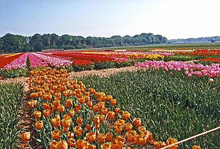

Climate
The climate of the Netherlands is temperate and marine. This causes the Netherlands to have cool summers and mild winters.
The Dutch United Provinces declared their independence from Spain in ; during the 17th century, they became a leading seafaring and commercial power, with settlements and colonies around the world.
After a 20-year French occupation, a Kingdom of the Netherlands was formed in . In , Belgium seceded and formed a separate kingdom. The Netherlands remained neutral in World War I but suffered German invasion and occupation in World War II.
A modern, industrialized nation, the Netherlands is also a large exporter of agricultural products. The country was a founding member of NATO and the EEC (now the EU) and participated in the introduction of the euro in .
In , the former Netherlands Antilles was dissolved and the three smallest islands - Bonaire, Sint Eustatius, and Saba - became special municipalities in the Netherlands administrative structure. The larger islands of Sint Maarten and Curacao joined the Netherlands and Aruba as constituent countries forming the Kingdom of the Netherlands.
In , the Sint Eustatius island council (governing body) was dissolved and replaced by a government commissioner to restore the integrity of public administration. According to the Dutch Government, the intervention will be as "short as possible and as long as needed."
The climate of the Netherlands is temperate and marine. This causes the Netherlands to have cool summers and mild winters.
Water and air pollution are significant environmental problems that are currently impacting the Netherlands. The pollution of the country's rivers comes from industrial and agricultural chemicals, including heavy metals, organic compounds, nitrates, and phosphates. Air pollution can be caused by vehicles and refining activities
| Emission Type | Amount | Year (est.) |
|---|---|---|
| Particulate matter | 12.07 µg/m3 | |
| Carbon dioxide | 170.78 mt | |
| Methane | 17.79 mt |
The capital of the Netherlands in Amsterdam and the Hauge is the seat of the government. The geographica corrdinates of Amsterdam are 52 21 N, 4 55 E.
The name Amsterdam comes from its original Dutch name, Amstellerdam, which means "a dam on the Amstel River". Amstellerdam dates back to the 13th century and has simplied over time to Amsterdam.
The time different is UTC+1 which is 6 hours ahead of Washinton, DC, during Standard Time. This time zone describes the continental Netherlands becasue for the constituent countries in the Caribbean the time difference is UTC-4. Daylight saving time is adding 1 hour, beginning the last Sunday in March and ends the last Sunday in October.
The flag has three equal horizontal bands of red (bright vermilion; top), white, and blue (cobalt). It is similar to the flag of Luxembourg but the Luxembourg flag has a lighter blue and is longer.
The colors were derived from those of William I, Prince of Orange, who led the Dutch Revolt against Spanish sovereignty in the latter half of the 16th century. The upper band on the flag was originally orange, but because the orange dye turned red over time, the red shade was eventually the permanent color. The banner is perhaps the oldest tricolor in continuous use.
The national symbols of the Netherlands are the lion and the tulip. The national color is orange.
| Religion | Percent (2019 est.) |
|---|---|
| Roman Catholic | 20.1 |
| Protestant | 14.8 |
| Muslim | 5 |
| Other | 5.9 |
| None | 54.1 |
"Protestant" includes Dutch Reformed, Protestant Church of The Netherlands, and Calvinists. "Other" includes Hindu, Buddhist, and Jewish.
| Age | Percent (2023 est.) | Number of Males | Number of Females |
|---|---|---|---|
| 0-14 | 16.06 | 1,436,601 | 1,368,697 |
| 15-64 | 63.08 | 5,532,490 | 5,483,034 |
| 65+ | 20.86 | 1,658,652 | 1,984,456 |
Randstad, an area anchored by the cities of Amsterdam, Rotterdam, the Hague, and Utrecht, is the most densely populated regions. The Northern Netherlands are less dense. While Randstad is the most populated, sizeable communities can be found throughout the entire country.